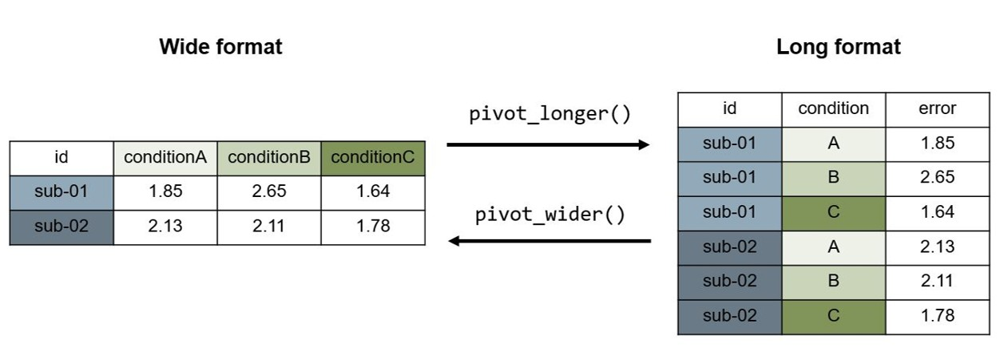

library(tidyverse)
d <- read.csv("data/readingskills.csv")7 Datensätze bearbeiten
Voraussetzungen
- Package {tidyverse} ist installiert.
- RProject namens
introduction_to_rmit Datenordnerdataaus Kapitel: Basics R und RStudio. - RNotebook namens
intro_datawranglingaus Kapitel: Basics R und RStudio. - Datensatz
readingskills.csvin OrdnerdataKapitel: Datensätze einlesen und schreiben oder hier herunterladen und indata-Ordner speichern.
In diesem Kapitel werden die wichtigsten Funktionen für die Datenverarbeitung in R behandelt. Die Funktionen können mit dem Package {tidyverse} installiert werden.
7.0.1 Laden der notwendigen Packages und Daten
Zu Beginn muss das {tidyverse} geladen und der Beispielsdatensatz eingelesen werden.
7.1 Datensatz kennenlernen und anschauen
Bei der Arbeit mit einem neuen Datensatz ist es wichtig, sich zu Beginn mit den enthaltenen Daten bekannzumachen. Hierzu können folgende Fragen gestellt werden:
- Welche Variablen sind enthalten?
- Welche Informationen enthalten diese?
- Welches Format haben sie? (Skalenniveau, Variablentyp)
- Was sind die maximal / minimal möglichen Werte?
- Wie sind nicht vorhandene Werte codiert?
- Ist der Datensatz im Long-Format oder im Wide-Format oder gemischt aufgebaut?
Im Idealfall besteht ein Data Dictionary, welches diese Informationen kurz und knapp zusammenfasst.
Datensatz
readingskills.csv
In diesem Kapitel wird der Beispielsdatensatz readingskills.csv verwendet.
Der Datensatz stammt aus dem Package {betareg}.
Er enthält Daten von 44 Kindern im Alter zwischen acht und zwölf Jahren über die Lesegenauigkeit, IQ-Wert aus einem nonverbalen Intelligenztest, und ob sie Dyslexie haben oder nicht.1
| variable | label | type | values | source | transformations | missings |
|---|---|---|---|---|---|---|
| participant identification | id |
character, factor | "sub-01" to "sub-44" |
raw | anonymized variable “participant” | NA |
| dyslexia diagnosis | dyslexia |
character, factor | "no", "yes" |
raw | NA |
|
| z-score in nonverbal IQ-test | iq_zscore |
numeric | apprx. -2 to 2 |
raw | z-transformed | NA |
| reading performance | accuracy |
numeric | 0 to 1 |
raw | transformed from points to proportion | NA |
Der Datensatz wurde für dieses Kapitel noch mit einer zusätzlichen Variable und zwei zusätzlichen Versuchspersonen ergänzt. Finden Sie diese?
Um den Datensatz zu erkunden, gibt es viele verschiedene Wege.
7.1.1 Datensatz erkunden im GUI
Der Datensatz kann angeschaut werden, in dem im Environment-Fenster darauf geklickt wird:
- Bei Klick auf das blaue Dreieck, erscheint eine Liste mit den Variablen.
- Bei Doppelklick auf den Datensatz, wird eine Tabelle geöffnet.
Praktisch ist hier, dass die Variablen in der Tabelle ein Format haben, dass man sich von anderen Tabellenverarbeitungsprogrammen, wie z.B. Excel, gewöhnt ist. Variablen können so auch mit wenig Aufwand der Grösse nach geordnet werden.
7.1.2 Datensatz erkunden durch Aufrufen des Datensatznamens
Der Datensatz kann durch Aufrufen des Datensatznames in die Konsole ausgeben werden:
d id dyslexia iq_zscore accuracy name
1 sub-01 no 0.827 0.88386 ZU
2 sub-02 no 0.590 0.76524 SD
3 sub-03 no 0.471 0.91508 VE
4 sub-04 no 1.144 0.98376 WE
5 sub-05 no -0.676 0.88386 WD
6 sub-06 no -0.795 0.70905 TE
7 sub-07 no -0.281 0.77148 GW
8 sub-08 no -0.914 1.00000 QS
9 sub-09 no -0.043 1.00000 XC
10 sub-10 no 0.907 1.00000 WS
11 sub-11 no 0.511 1.00000 DD
12 sub-12 no 1.223 1.00000 HR
13 sub-13 no 0.590 1.00000 VE
14 sub-14 no 1.856 1.00000 AM
15 sub-15 no -0.399 1.00000 AH
16 sub-16 no 0.590 1.00000 ER
17 sub-17 no -0.043 0.70281 ZW
18 sub-18 no 1.738 1.00000 BE
19 sub-19 no 0.471 0.66535 WE
20 sub-20 no 1.619 1.00000 EH
21 sub-21 no 1.144 0.95878 IA
22 sub-22 no -0.201 1.00000 AD
23 sub-23 no -0.281 0.73402 PW
24 sub-24 no 0.590 0.64662 AO
25 sub-25 no 1.777 1.00000 EP
26 sub-26 yes -0.083 0.57794 DE
27 sub-27 yes -0.162 0.64038 AS
28 sub-28 yes -0.795 0.45932 LA
29 sub-29 yes -0.281 0.65286 RG
30 sub-30 yes -0.874 0.60916 AL
31 sub-31 yes 0.313 0.60916 IF
32 sub-32 yes 0.709 0.54048 PF
33 sub-33 yes 1.223 0.57170 BN
34 sub-34 yes -1.230 0.70281 NO
35 sub-35 yes -0.162 0.56546 IS
36 sub-36 yes -0.993 0.53424 IV
37 sub-37 yes -1.191 0.57794 ML
38 sub-38 yes -1.745 0.69032 OW
39 sub-39 yes -1.745 0.54673 MF
40 sub-40 yes -0.439 0.68408 LK
41 sub-41 yes -1.666 0.59043 MW
42 sub-42 yes -1.507 0.62165 ME
43 sub-43 yes -0.518 0.67159 QE
44 sub-44 yes -1.270 0.66535 DF
45 sub-98 yes NA 3.00000 PE
46 <NA> no 0.300 0.70000 KW
47 sub-99 no 0.400 99.00000 TS7.1.3 Datensatz erkunden mit Funktionen
Nützliche Funktionen zum Erkunden eines Datensatzes sind zudem glimpse()
glimpse(d)Rows: 47
Columns: 5
$ id <chr> "sub-01", "sub-02", "sub-03", "sub-04", "sub-05", "sub-06", …
$ dyslexia <chr> "no", "no", "no", "no", "no", "no", "no", "no", "no", "no", …
$ iq_zscore <dbl> 0.827, 0.590, 0.471, 1.144, -0.676, -0.795, -0.281, -0.914, …
$ accuracy <dbl> 0.88386, 0.76524, 0.91508, 0.98376, 0.88386, 0.70905, 0.7714…
$ name <chr> "ZU", "SD", "VE", "WE", "WD", "TE", "GW", "QS", "XC", "WS", …und head().
head(d) id dyslexia iq_zscore accuracy name
1 sub-01 no 0.827 0.88386 ZU
2 sub-02 no 0.590 0.76524 SD
3 sub-03 no 0.471 0.91508 VE
4 sub-04 no 1.144 0.98376 WE
5 sub-05 no -0.676 0.88386 WD
6 sub-06 no -0.795 0.70905 TE7.1.4 Datensatz erkunden durch Zusammenfassen
Mit der Funktion summary()kann eine kurze Übersicht über den Datensatz erstellt werden:
summary(d) id dyslexia iq_zscore accuracy
Length:47 Length:47 Min. :-1.7450 Min. : 0.4593
Class :character Class :character 1st Qu.:-0.7652 1st Qu.: 0.6310
Mode :character Mode :character Median :-0.0630 Median : 0.7090
Mean : 0.0152 Mean : 2.9113
3rd Qu.: 0.5900 3rd Qu.: 1.0000
Max. : 1.8560 Max. :99.0000
NA's :1
name
Length:47
Class :character
Mode :character
7.2 Einzelne Variablen ausgeben
Einzelne Variablen können angeschaut werden, indem das $ Zeichen verwendet wird:
d$id [1] "sub-01" "sub-02" "sub-03" "sub-04" "sub-05" "sub-06" "sub-07" "sub-08"
[9] "sub-09" "sub-10" "sub-11" "sub-12" "sub-13" "sub-14" "sub-15" "sub-16"
[17] "sub-17" "sub-18" "sub-19" "sub-20" "sub-21" "sub-22" "sub-23" "sub-24"
[25] "sub-25" "sub-26" "sub-27" "sub-28" "sub-29" "sub-30" "sub-31" "sub-32"
[33] "sub-33" "sub-34" "sub-35" "sub-36" "sub-37" "sub-38" "sub-39" "sub-40"
[41] "sub-41" "sub-42" "sub-43" "sub-44" "sub-98" NA "sub-99"7.3 Verwenden der Pipe: |> oder %>%
In R kann die Pipe verwendet werden, um mehrere Datenverarbeitungsschritte aneinander zu hängen. Damit spart man sich aufwändige Zwischenschritte und vermeidet das Erstellen von immer neuen Datensätzen. Statt zwei einzelne Datenverarbeitungsschritte zu machen wie oben, können mehrere Schritte (hier Daten einlesen und anzeigen) zusammengefasst werden, in dem nach Zeilenende eine Pipe eingefügt wird:
d <- read.csv("data/readingskills.csv") |>
glimpse()Die Base R Pipe |> und die magritter Pipe %>%_ unterscheiden sich nur in Details. Für dieses Kapitel spielt es keine Rolle, welche Pipe verwendet wird.
Tipp
Achtung: Wenn zu Beginn ein <- oder = verwendet wird, wird alles was nach der Pipe kommt den Datensatz verändern. Wird z.B. der Code …
d <- read.csv("data/readingskills.csv") |>
head()…eingegeben, besteht der Datensatz d dann nur noch aus 6 Zeilen, weil head() nur die obersten 6 Zeilen anzeigt.
Wird die Pipe ohne <- oder = verwendet, bleibt der Datensatz unverändert:
d |>
head()7.4 Datensatz bearbeiten oder neuer Datensatz erstellen
Der Datensatz kann, z.B. für das Visualisieren oder für die Analyse, verändert werden. Hierbei kann entweder der bestehende Datensatz, also d, überschrieben werden, oder es kann eine neuer Datensatz erstellt werden.
7.5 Variablen auswählen: select()
Ein komplexer Datensatz mit sehr vielen Variablen wird oft für die Analyse aus Gründen der Einfachheit oder Anonymisierung reduziert. Das bedeutet, dass man die nötigen Variablen auswählt, und nur mit diesem reduzierten Datensatz weiterarbeitet. Hierzu eignet sich die Funktion select() sehr gut: Mit select(.data, variablenname, ...) können die zu behaltenden Variablen ausgewählt werden. Wird ein ! vor einen Variablennamen gesetzt, wird die Variable nicht behalten, sondern alle anderen Variablen bleiben im Datensatz.
Mit select() können Variablen innerhalb des Datensatzes sortiert und umbenannt werden, damit der Datensatz so strukturiert ist, dass er sich für die Analyse/Visualisierung eignet.
Beispiele:
# Variablen id und accuracy behalten ohne Pipe
d_simpler <- select(d, id, accuracy)
# Variablen id und accuracy behalten mit Pipe
d_simpler <- d |> select(id, accuracy)
# Variablen id und accuracy mit umgekehrter Reihenfolge behalten mit Pipe
d_simpler <- d |> select(accuracy, id)
# alle Variablen ausser id behalten
d_simpler <- d |> select(!id)
# Variablennamen verändern
d_simpler <- d |> select(iq_value = iq_zscore)Sollen mehrere Variablen am Stück ausgewählt werden, kann die erste Variable in der Reihe (z.B. word) und die letzte in der Reihe (z.B. congruent) als word:congruent eingeben, dann werden auch alle dazwischen liegenden Variablen ausgewählt.
d_simpler <- d |> select(id:accuracy)
Hands-on: Variablen auswählen
Variablen, die nicht verwendet werden aber persönliche Informationen enthalten, können zur Anonymisierung entfernt werden. Welche Variable wurde zum Originaldatensatz hinzugefügt und könnte (wenn sie nicht erfunden wäre) persönliche Informationen der Kinder enthalten, die für die weiteren Analysen nicht nötig sind?
Überschreiben Sie den Datensatz d mit einer anonymisierten Version.
Untenstehend finden Sie ein Beispiel, wie der Datensatz danach aussehen könnte.
Lösung: Variablen auswählen
Die Variable name enthält persönliche Angaben, die irrelevant für die Datenanalyse/-visualisierung sind.
d <- d |>
select(id,
dyslexia,
iq_zscore,
accuracy)
glimpse(d)Rows: 47
Columns: 4
$ id <chr> "sub-01", "sub-02", "sub-03", "sub-04", "sub-05", "sub-06", …
$ dyslexia <chr> "no", "no", "no", "no", "no", "no", "no", "no", "no", "no", …
$ iq_zscore <dbl> 0.827, 0.590, 0.471, 1.144, -0.676, -0.795, -0.281, -0.914, …
$ accuracy <dbl> 0.88386, 0.76524, 0.91508, 0.98376, 0.88386, 0.70905, 0.7714…7.6 Messungen auswählen: filter()
Mit der Funktion filter() können bestimmte Beobachtungen oder Untergruppen ausgewählt werden. Hierfür muss in der Funktion filter(.data, filter, ...) der Datensatz, die betreffende Variable, sowie eine Bedingung eingegeben werden. Es wird die ganze Zeile im Datensatz behalten in der die Variable der angegebenen Bedingung entspricht.
Beispiele:
# nur Messungen (Zeilen) der Person sub-01 werden behalten
d_filtered <- filter(d, id == "sub-01")
# dasselbe mit der Pipe
d_filtered <- d |> filter(id == "sub-01")
# nur Messungen (Zeilen) mit accuracy über 0.5 werden behalten
d_filtered <- d |> filter(accuracy > 0.5)
# nur Messungen (Zeilen) der Kinder mit Dyslexie werden behalten
d_filtered <- d |> filter(dyslexia == "yes")
# nur Messungen (Zeilen) der Kinder die nicht Dyslexie: ja haben werden behalten
d_filtered <- d |> filter(dyslexia != "yes")
# nur Messungen (Zeilen) mit accuracy zwischen 0.5 und 0.8 werden behalten
d_filtered <- d |> filter(accuracy > 0.5 & accuracy < 0.8)
# nur Messungen (Zeilen) mit iq_zscore grösser oder gleich gross wie 1 behalten
d_filtered <- d |> filter(iq_zscore >= 1)Es kann auch mehrere Male hintereinander die filter()-Funktion aufgerufen werden:
# mehrere Filter verwenden
d_filtered <- d |>
filter(id != "NA") |>
filter(iq_zscore <= 1)
Hands-on: Daten filtern
Drei Messungen (Zeilen) sind ungültig. Schauen Sie zuerst den Datensatz an, um zu erkennen, welche es sind.
Überschreiben Sie den Datensatz d und behalten Sie nur die gültigen Messungen (44 Messungen).
Lösung: Daten filtern
d <- d|>
filter(id != "NA") |>
filter(iq_zscore != "NA") |>
filter(accuracy <= 1)7.7 Neue Variablen generieren und verändern: mutate() und case_when()
Mit der mutate(.data, …) Funktion können im Datensatz neue Variablen generiert oder bestehende Varaiablen verändert werden.
Beispiel:
# Neue Variablen erstellen
d_new <- d |>
mutate(num_variable = 1.434,
chr_variable = "1.434",
sum_of_variable = accuracy + 1,
copy_variable = accuracy)
# Bestehende Variablen verändern
d_new <- d_new |>
mutate(accuracy = accuracy * 100) # z.B. um Accuracy zu Percent correct zu transformierenMit case_when() kann eine neue Variable erstellt werden in Abhängigkeit von Werten anderer Variablen. Damit kann z.B. eine Variable passed erstellt werden, für alle Werte die genügend guten Leseresultate entsprechen.
Beispiel:
d_condvariable <- d |>
mutate(grade = case_when(accuracy > 0.7 ~ "passed",
accuracy <= 0.7 ~ "failed",
.default = NA))Es können immer auch vorher definierte Variablen eingesetzt werden in die Funktionen, solange die Variable den richtigen Variablentyp hat:
CUTOFF = 0.7
d_condvariable <- d |>
mutate(grade = case_when(accuracy > CUTOFF ~ "passed",
accuracy <= CUTOFF ~ "failed",
.default = NA))
Hands-on: Variablen generieren und verändern
Erstellen Sie im Datensatz
d_gradeseine neue Variable mit dem Namenresearcher, den Ihren Namen enthält.Erstellen Sie zudem eine Variable
grade, mitpassfüraccuracy-Werten über 0.9 und mitfailfüraccuracy-Werten unter 0.9.Schauen Sie den Datensatz an: Wie viele Kinder hätten bestanden bei diesem Cut-off?
Lösung: Variablen generieren und verändern
CUTOFF = 0.9
d_grades <- d |>
mutate(
researcher = "Vorname Nachname",
grade = case_when(accuracy > CUTOFF ~ "pass",
accuracy <= CUTOFF ~ "fail",
.default = NA)
)
d_grades$grade [1] "fail" "fail" "pass" "pass" "fail" "fail" "fail" "pass" "pass" "pass"
[11] "pass" "pass" "pass" "pass" "pass" "pass" "fail" "pass" "fail" "pass"
[21] "pass" "pass" "fail" "fail" "pass" "fail" "fail" "fail" "fail" "fail"
[31] "fail" "fail" "fail" "fail" "fail" "fail" "fail" "fail" "fail" "fail"
[41] "fail" "fail" "fail" "fail"7.8 Variablentyp verändern: as.factor(), as.numeric(), …
Variablen können verschiedene Tyoen haben, sie können z.B. kategoriale (factor, character) oder numerische (integer, numeric, double) Informationen enthalten. Beim Einlesen “rät” R, welche Klasse eine Variable hat. Teilweise ist es praktisch dies zu ändern für die weitere Analyse.
Wenn wir eine Variable zu einem Faktor machen möchten, verwenden wir as.factor(). Dies macht z.B. Sinn, wenn die Versuchspersonennummer als Zahl eingelesen wurde. Um von einem Faktor zu einer numerischen Variable zu kommen, verwenden wir as.numeric().
# Die Variable "id" zu einem Faktor machen
d <- d |>
mutate(id = as.factor(id))
Hands-on: Variablentyp verändern
Schauen Sie sich den Datensatz mit glimpse() an. Welche Variablentypen enthält Ihr Datensatz und was bedeuten Sie?
Verändern Sie alle character-Variablen (chr) zu factor-Variablen.
Wieviele Levels haben die Variablen nun?
Lösung: Variablentyp verändern
d <- d |>
mutate(id = as.factor(id),
dyslexia = as.factor(dyslexia))7.9 Daten gruppieren und zusammenfassen: group_by() und summarise()
Mit diesen beiden Funktionen könne Datensätze effizient gruppiert und zusammengefasst werden.
# Nach Diagnose gruppieren und Accuracy zusammenfassen
d |> group_by(dyslexia) |>
summarise(mean_acc = mean(accuracy),
sd_acc = sd(accuracy))# A tibble: 2 × 3
dyslexia mean_acc sd_acc
<fct> <dbl> <dbl>
1 no 0.905 0.129
2 yes 0.606 0.0637
Hands-on: Datensätze gruppieren und zusammenfassen
Erstellen Sie einen neuen Datensatz d_summary wie folgt:
Gruppieren Sie den Datensatz für Dyslexia (ja / nein)
Fassen Sie für diese Gruppen die durchschnittliche Accuracy und der durchschnittliche IQ-Wert zusammen sowie die Standardabweichungen zusammen.
Unterscheiden sich die Accuracy und IQ-Werte zwischen den Gruppen?
Lösung: Datensätze gruppieren und zusammenfassen
d_summary <- d |>
group_by(dyslexia) |>
summarise(mean_acc = mean(accuracy),
sd_acc = sd(accuracy),
mean_iq = mean(iq_zscore),
sd_iq = sd(iq_zscore))
d_summary# A tibble: 2 × 5
dyslexia mean_acc sd_acc mean_iq sd_iq
<fct> <dbl> <dbl> <dbl> <dbl>
1 no 0.905 0.129 0.497 0.819
2 yes 0.606 0.0637 -0.653 0.8387.10 Datensatzformate transformieren: pivot_wider() und pivot_longer()
7.10.1 Wide zu Long transformieren
Ein Datensatz im Wide-Format kann mit pivot_longer() zu einem Datensatz im Long-Format verändert werden.
# Wide Datensatz erstellen
d_wide <- tibble(
id = c("sub-01", "sub-02"),
conditionA = c(1.85, 2.13),
conditionB = c(2.65, 2.11),
conditionC = c(1.64, 1.78)
)
# Zu Long transformieren
d_long <- d_wide |>
pivot_longer(conditionA:conditionC, # Variablen zum zusammenfassen
names_to = "condition", # Neuer Variablenname Kategorien
names_prefix = "condition", # Entfernen aus Bezeichnung (optional)
values_to = "error") # Neuer Variablenname Werte
d_long# A tibble: 6 × 3
id condition error
<chr> <chr> <dbl>
1 sub-01 A 1.85
2 sub-01 B 2.65
3 sub-01 C 1.64
4 sub-02 A 2.13
5 sub-02 B 2.11
6 sub-02 C 1.787.10.2 Long zu Wide transformieren
Ein Datensatz im Long-Format kann mit pivot_wider() zu einem Datensatz im Wide-Format verändert werden.
# Wide Datensatz erstellen
d_long <- tibble(
id = c("sub-01", "sub-01", "sub-01", "sub-02", "sub-02", "sub-02"),
condition = c("A", "B", "C", "A", "B", "C"),
error = c(1.85, 2.65, 1.64, 2.13, 2.11, 1.78)
)
# Zu Wide transformieren
d_wide <- d_long |>
pivot_wider(id_cols = id, # ID Variable
names_from = condition, # Variable mit Kategorien
names_prefix = "condition", # Namenszusatz (optional)
values_from = error # Variable mit Werten
)
d_wide# A tibble: 2 × 4
id conditionA conditionB conditionC
<chr> <dbl> <dbl> <dbl>
1 sub-01 1.85 2.65 1.64
2 sub-02 2.13 2.11 1.78
pivot-Funktion7.11 Datensätze speichern: write.csv()
Hands-on: Neuer Datensatz abspeichern
Speichern Sie den bearbeiteten Datensatz als Datei ab
write.csv(d, "data/readingskills_clean.csv", row.names = FALSE)Smithson M, Verkuilen J (2006). A Better Lemon Squeezer? Maximum-Likelihood Regression with Beta-Distributed Dependent Variables. Psychological Methods, 11(7), 54–71.↩︎